Mục tiêu học tập
Học xong Chương 7, bạn cần làm được từng việc dưới đây. Nhãn cho biết mục nào trình bày nội dung đó.
- 7.1Giải thích sự khác nhau giữa thời gian tương đối và thời gian bằng số.
- 7.1.1Mô tả các nguyên lý của địa tầng học (chương sách nói năm, nhưng liệt kê sáu).
- 7.1.4Áp dụng các nguyên lý định tuổi tương đối cho một sơ đồ khối và diễn giải trình tự các sự kiện địa chất.
- 7.2.1Định nghĩa đồng vị; giải thích phân rã alpha, phân rã beta và bắt giữ electron như các cơ chế phân rã phóng xạ.
- 7.2.2Mô tả cách tiến hành định tuổi bằng đồng vị phóng xạ và kể tên bốn đồng vị chính được sử dụng.
- 7.2.2Giải thích carbon-14 hình thành trong khí quyển như thế nào và được dùng để định tuổi các sự kiện gần đây ra sao.
- 7.2.3Giải thích làm sao các nhà khoa học biết tuổi bằng số của Trái Đất và của các sự kiện khác trong lịch sử Trái Đất.
- 7.2.4Giải thích cách định tuổi các loạt trầm tích bằng đồng vị phóng xạ và các kỹ thuật khác.
- 7.3.1Định nghĩa hóa thạch và mô tả các kiểu bảo tồn hóa thạch.
- 7.3.2Trình bày khái quát cách chọn lọc tự nhiên diễn ra như một cơ chế của tiến hóa.
- 7.4Mô tả đối sánh địa tầng.
- 7.4.5Kể tên các liên đại, đại và kỷ của thang tuổi địa chất và giải thích mục đích của việc phân chia.
- 7.4.3Giải thích quan hệ giữa đơn vị thời gian và đơn vị đá tương ứng: thời địa tầng so với thạch địa tầng.
Cách dùng tài liệu này
Các từ gạch chân là thuật ngữ. Bấm vào một từ, hoặc mở Thuật ngữ ở góc dưới bên phải, để đọc và tìm kiếm mọi định nghĩa của chương. Nhà địa chất đo thời gian theo hai cách: thời gian tương đối sắp xếp các sự kiện theo thứ tự (cổ hơn hay trẻ hơn) mà không cần con số, còn thời gian bằng số (tuyệt đối) cho biết tuổi tính bằng năm. Thang tuổi địa chất và khung lịch sử Trái Đất đã được xây dựng bằng thời gian tương đối từ rất lâu trước khi người ta đo được tuổi bằng năm.

Đôi nét lịch sử. Nicolas Steno (1638–1686) đưa ra các nguyên lý cơ bản của (stratigraphy), ngành nghiên cứu các lớp đá, vào năm 1669. William Smith (1769–1839), khi làm việc trong các mỏ than ở Anh, nhận thấy các và thứ tự của chúng giống nhau trong cả vùng; ông lập bản đồ địa chất quốc gia đầu tiên của Anh và được gọi là “cha đẻ của địa chất học Anh”. Các nhà khoa học thế kỷ 19 dùng nguyên lý của Steno để xây dựng thang thời gian tương đối, đặt tên các đơn vị theo đá ở vùng nơi chúng được mô tả (7.4.5). Bản thân lịch sử Trái Đất là chủ đề của Chương 8.
7.1Định tuổi tương đối
(relative dating) xác định một đá hay một sự kiện cổ hơn hay trẻ hơn một đá, sự kiện khác, mà không cần biết mỗi thứ hình thành cách đây bao nhiêu năm. Các nguyên lý này nay trông hiển nhiên, nhưng giới học giả chỉ chấp nhận rộng rãi chúng vào thời cách mạng khoa học thế kỷ 17–18. Thuyết của James Hutton (“hiện tại là chìa khóa của quá khứ”; Học phần 1) là nền tảng để đọc đá theo các nguyên lý khoa học.
7.1.1 Các nguyên lý định tuổi tương đối
Các nguyên lý này được dùng trong mọi lĩnh vực địa chất nhưng hữu ích nhất trong địa tầng học (Hình 7.2).
- . Trong một loạt tầng trầm tích không bị xáo trộn, lớp ở dưới cùng là cổ nhất, các lớp phía trên trẻ hơn.
- . Các lớp lắng đọng từ trên xuống, như trầm tích và dòng dung nham, ban đầu nằm ngang. Ngoại lệ là ở rìa bồn, nơi tầng đá có thể hơi dốc xuống phía .
- . Trong bồn lắng đọng, tầng đá liên tục theo mọi hướng cho tới khi vát mỏng ở rìa bồn. Lớp nào rồi cũng kết thúc, khi gặp vật cản như một dải núi hoặc khi ở quá xa nguồn trầm tích hay núi lửa. Tầng đá về sau bị hẻm vực cắt qua vẫn liên tục ở hai bên.
- . Nếp uốn, đứt gãy và thể xâm nhập magma cắt qua đá thì trẻ hơn đá mà chúng cắt.
- . Khi một hệ tầng đá chứa mảnh của một đá khác, đá bị bao cổ hơn .
- . Tiến hóa đã tạo ra một chuỗi hóa thạch đặc trưng tương ứng với các đơn vị của thang tuổi địa chất. Các tổ hợp hóa thạch (nhóm nhiều hóa thạch khác nhau cùng xuất hiện) là duy nhất cho thời gian chúng sống, nên dùng để đối sánh các đá cùng tuổi trên diện rộng.
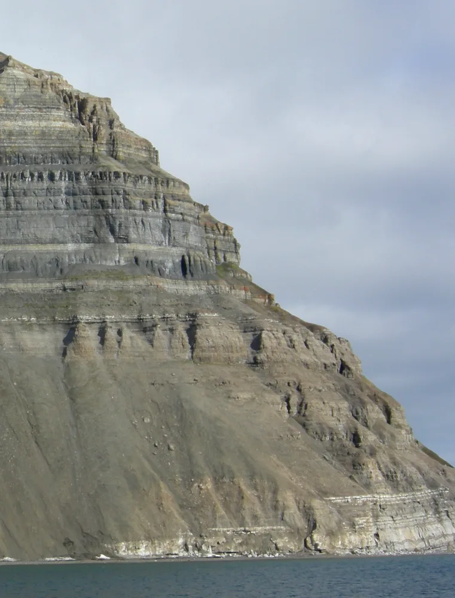
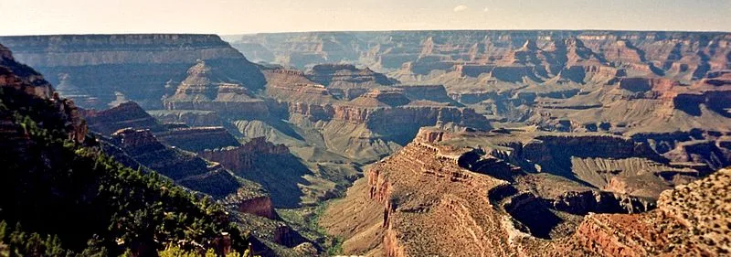

7.1.2 Ví dụ Grand Canyon
Grand Canyon thể hiện rõ các nguyên lý. Các lớp đá xếp chồng từ cổ nhất ở dưới đến trẻ nhất ở trên (chồng chất). Lớp màu trắng ngay dưới mép vực, cát kết Coconino, xuất hiện ở cả hai bên hẻm vực do sông Colorado khoét (liên tục theo phương ngang).

Hình 7.7 cho thấy ba nhóm đá. Dưới cùng là đá móng Vishnu: đá phiến (#16) biến chất, đơn vị cổ nhất, bị một thể xâm nhập granit (#17) cắt qua nên granit trẻ hơn (cắt xuyên). Bên trên, các lớp trầm tích được đánh số ngược, #15 cổ nhất và #1 trẻ nhất (chồng chất). Vùng này nằm trên cao nguyên Colorado, nơi tầng đá nằm ngang hoặc gần ngang (nằm ngang ban đầu); ngoài một đợt nâng lên trên diện rộng, chúng hầu như không bị xáo trộn.
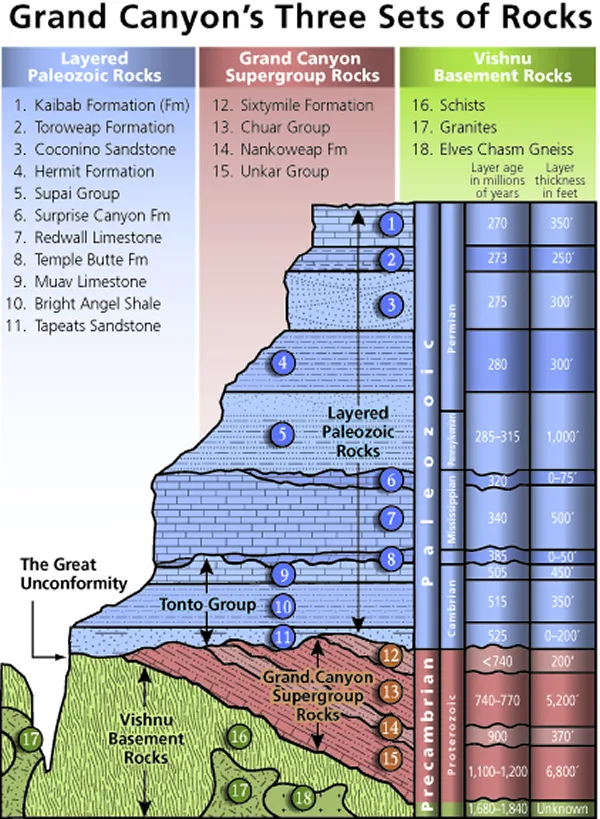
Các tầng đá được lắng đọng nằm ngang trên magma và biến chất cổ hơn. Vì biến chất, xâm nhập và bào mòn đã làm đứt quãng bản ghi giữa móng và tầng đá, mặt tiếp xúc này là một : một khoảng thời gian không có lắng đọng, hoặc trầm tích đã bị bào mòn, nên ở nơi đó không có đá ghi lại thời gian ấy. Trên mặt cắt và cột địa tầng, bất chỉnh hợp được vẽ bằng đường lượn sóng.

7.1.3 Bất chỉnh hợp
Có ba kiểu (Bảng 7.1, Hình 7.9).
| Kiểu | Đá bên dưới | Đá bên trên | Ví dụ ở Grand Canyon |
|---|---|---|---|
| (nonconformity) | Đá magma hoặc biến chất (kết tinh) | Tầng đá trầm tích | Tầng đá trên móng Vishnu |
| (disconformity) | Tầng trầm tích, song song | Tầng trầm tích, song song; giữa có gián đoạn lắng đọng hoặc bào mòn | Giữa các hệ tầng Muav, Temple Butte và Redwall |
| (angular unconformity) | Tầng trầm tích bị nghiêng, uốn nếp và/hoặc đứt gãy, rồi bị bào mòn | Tầng trầm tích nằm ngang | Bất chỉnh hợp Lớn (Great Unconformity) |
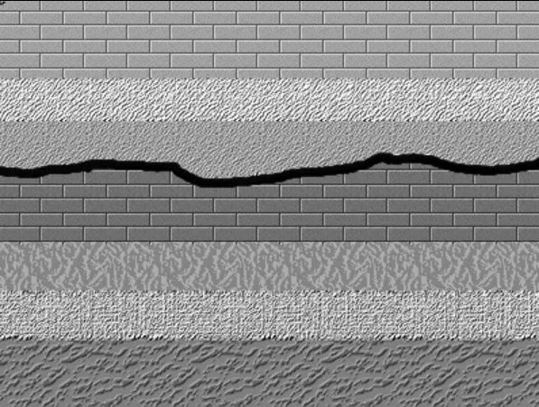
Bất chỉnh hợp song songgián đoạn giữa các tầng song song Bất chỉnh hợp trên đá kết tinhtầng đá trên đá magma hoặc biến chất
Bất chỉnh hợp trên đá kết tinhtầng đá trên đá magma hoặc biến chất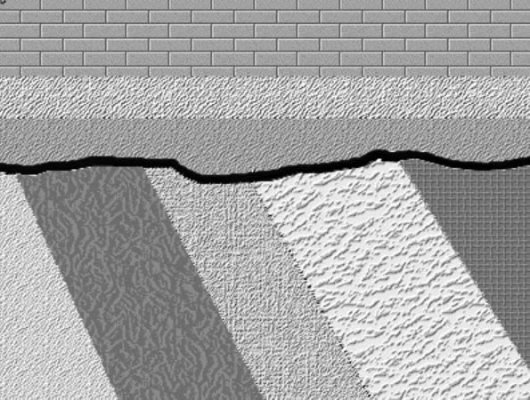
Bất chỉnh hợp góctầng nằm ngang trên tầng nghiêng
Bất chỉnh hợp song song ở Grand Canyon. Các tầng đá ghi lại những đợt và khi mực nước biển dâng và hạ qua hàng triệu năm. Khi mực nước biển cao, tầng trầm tích biển được lắng đọng; khi biển rút, đất liền lộ ra và bị bào mòn. Những lớp lẽ ra có mặt đã không còn, và thời gian chúng lẽ ra ghi lại được thể hiện bằng bất chỉnh hợp (các đường lượn sóng đậm trong Hình 7.7).
Bất chỉnh hợp Lớn. Phần lớn tầng đá Hiển sinh trong hẻm vực nằm ngang, nhưng gần đáy chúng phủ lên các tầng nằm nghiêng. Quá trình kiến tạo làm nghiêng các tầng bên dưới, sau đó chúng bị bào mòn; về sau các tầng nằm ngang được lắng đọng lên trên.
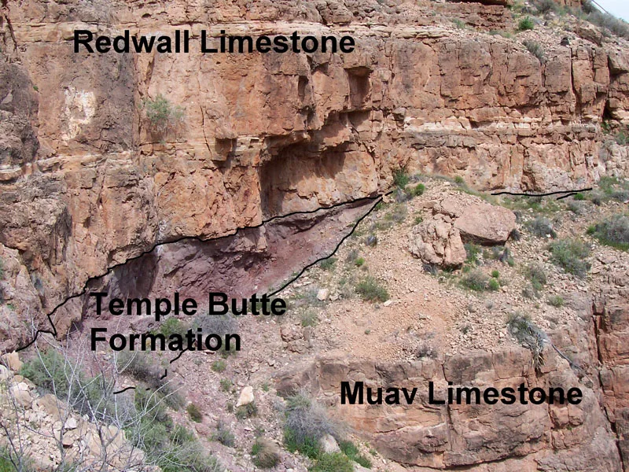
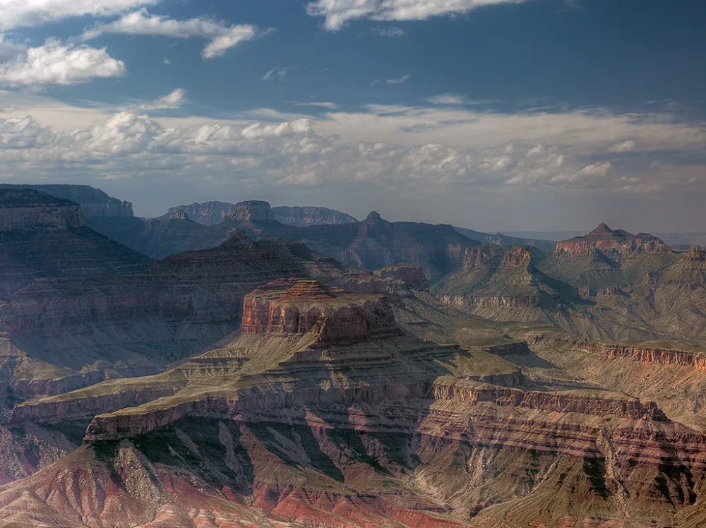
7.1.4 Áp dụng các nguyên lý định tuổi tương đối
Dùng các nguyên lý và hiểu biết về đá magma, trầm tích, biến chất (Học phần 4–6), đọc các sự kiện trong Hình 7.12 từ cổ nhất đến trẻ nhất:
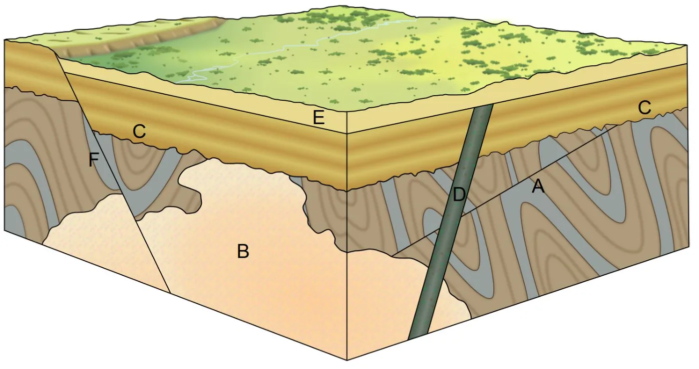
- Gneis hình thành và bị uốn nếp (cổ nhất).
- Đứt gãy A cắt và làm xê dịch gneis.
- Thể nền B (granit) xâm nhập dưới dạng magma; đường viền bất thường của nó cắt cả gneis lẫn đứt gãy A, nên nó trẻ hơn cả hai.
- Gneis, đứt gãy A và B bị bào mòn, tạo một bất chỉnh hợp trên đá kết tinh (đường lượn sóng), tức một mặt đất cổ.
- Lớp C lắng đọng trên mặt đó, có thể do một đợt biển tiến.
- Thể tường D cắt qua mọi đá trừ E.
- Bào mòn san phẳng địa hình: đỉnh D ngang với đỉnh C, nên có một bất chỉnh hợp song song giữa C/D và E.
- Lớp E lắng đọng.
- Đứt gãy F cắt B, C và E, tạo một (gờ thấp ở phía trên bên trái).
- Bào mòn hiện nay làm tròn mép vách và tạo nên địa hình ngày nay (trẻ nhất).
Kiểm tra: Câu hỏi Mục 7.1 trong giáo trình ↗
7.2Định tuổi tuyệt đối
Thời gian tương đối kể câu chuyện theo thứ tự nhưng không có con số, nên không cho biết tốc độ của các quá trình địa chất. Từ đồng nhất luận, các nhà địa chất thời đầu suy ra rằng các quá trình diễn ra chậm và Trái Đất rất già; định tuổi tương đối là phương pháp duy nhất cho đến cuối thế kỷ 19. Việc phát hiện vào cuối những năm 1800 mang lại công cụ mới, định tuổi bằng đồng vị phóng xạ, cho phép gán tuổi tính bằng năm cho các hạt khoáng vật. Các con số này không phụ thuộc vào việc so sánh với đá khác, nên phương pháp được gọi là . Định tuổi bằng đồng vị phóng xạ là kiểu phổ biến nhất và là trọng tâm của mục này.
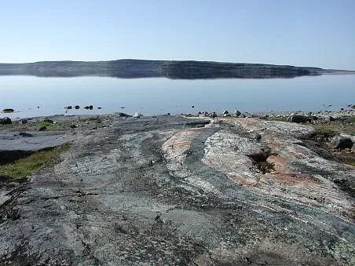
7.2.1 Phân rã phóng xạ
là nguyên tử của một nguyên tố có số neutron khác nhau. Hydro luôn có 1 proton (số nguyên tử của nó), nhưng có thể có 0, 1 hoặc 2 neutron. Số neutron cộng số nguyên tử cho số khối: proti (1H), deuteri (2H) và triti (3H) (Hình 7.14).

Nhiều nguyên tố có cả đồng vị bền và không bền; 1H và 2H bền, 3H thì không. Các đồng vị phóng xạ không bền tự phát giải phóng hạt hoặc năng lượng, gọi là , và trở thành đồng vị bền hơn của một nguyên tố khác (ví dụ 14C → 14N).
Thời điểm một nguyên tử riêng lẻ phân rã là ngẫu nhiên, không đoán trước được. Nhưng một mẫu đá có thể chứa hàng nghìn tỉ nguyên tử phóng xạ, và một nhóm lớn như vậy phân rã theo quy luật đoán trước được. là thời gian để một nửa số nguyên tử không bền phân rã thành đồng vị bền. Nó không đổi và đo được với mỗi đồng vị, nên có thể dùng để tính tuổi đá: ví dụ 4,5 tỉ năm với urani-238 (238U) và 5.730 năm với 14C.

Hai giả định then chốt
- Các hạt khoáng vật chứa đồng vị hình thành cùng lúc với đá, như khoáng vật kết tinh từ magma.
- Tinh thể vẫn là một : không nguyên tố nào đi vào hay đi ra sau đó.
| Đá hoặc vật liệu | Phù hợp? | Lý do |
|---|---|---|
| Đá magma | Tốt nhất | Khoáng vật cho biết thời điểm kết tinh từ magma. |
| Đá biến chất | Hạn chế | Biến chất có thể “đặt lại đồng hồ”; tuổi đo được có thể là hỗn hợp của nhiều đợt biến chất, không phải tuổi kết tinh ban đầu. |
| Đá trầm tích | Không | Mảnh vụn đến từ nhiều đá mẹ ở những nơi không rõ, nên tuổi đo được vô nghĩa đối với lớp trầm tích. |
| Trầm tích kết tủa (ví dụ ) | Có | Khoáng vật mọc tại chỗ có thể chứa nguyên tố phù hợp. |
| Lớp vụn núi lửa, dòng dung nham, đá magma cắt xuyên, thể vỉa | Có | Dùng để định tuổi hoặc kẹp tuổi các đá trầm tích quanh chúng (7.2.4). |
| Hạt | Có | Rất bền; cho tuổi rất cổ, kể cả vật chất cổ nhất được biết trên Trái Đất, và tuổi đá nguồn của trầm tích đã bị biến chất. |
Ba cách nguyên tử phân rã
| Kiểu | Điều xảy ra trong hạt nhân | Số nguyên tử | Số khối | Ví dụ |
|---|---|---|---|---|
| Phát ra một hạt alpha (2 proton + 2 neutron, tức hạt nhân heli) | −2 | −4 | 238U → 234Th | |
| Một neutron tách thành một proton và một electron; electron thoát ra dưới dạng tia beta | +1 | Không đổi | 234Th → 234Pa → 234U | |
| Một proton bắt một electron từ lớp vỏ và trở thành neutron | −1 | Không đổi | 40K → 40Ar |
Phân rã alpha. Hạt nhân heli thoát ra có thể để lại khí heli bị giữ trong mạng tinh thể của khoáng vật. Mất 2 proton làm nguyên tử lùi hai ô trong Bảng tuần hoàn; mất 4 hạt làm khối lượng giảm 4. 238U (92 proton, số khối 238) phát một hạt alpha và trở thành thori-234. Sản phẩm phân rã là ; đồng vị ban đầu là . Với chu kỳ bán rã 4,5 tỉ năm, 238U dùng để định tuổi những vật chất cổ nhất trên Trái Đất, thiên thạch và các sự kiện sớm nhất của Hệ Mặt Trời.


Phân rã beta và chuỗi phân rã. Đồng vị của các nguyên tố khác nhau có thể cùng số khối, như 234Th, 234Pa và 234U. Phân rã tiếp tục sinh ra các đồng vị mẹ và con phóng xạ cho tới khi tạo thành một đồng vị con bền; loạt này gọi là . 238U trải qua một loạt phân rã alpha (mũi tên đỏ) và beta (mũi tên xanh) để thành chì-206 bền (Hình 7.18).

Bắt giữ electron. Sau khi bắt giữ, hoặc một electron khác nhảy vào chỗ trống và phát ra tia X, hoặc theo hiệu ứng Auger, một electron khác bị bật ra và nguyên tử trở thành . Kali-40 (40K) phân rã theo cách này thành argon-40 với chu kỳ bán rã 1,25 tỉ năm, rất hữu ích để định tuổi các sự kiện địa chất. 40K chỉ chiếm một phần rất nhỏ (0,012%) của kali tự nhiên; phần lớn kali không phóng xạ.
| Nguyên tố | Ký hiệu mẹ | Ký hiệu con | Chu kỳ bán rã |
|---|---|---|---|
| Urani-238 / Chì-206 | 238U | 206Pb | 4,5 tỉ năm |
| Urani-235 / Chì-207 | 235U | 207Pb | 704 triệu năm |
| Kali-40 / Argon-40 | 40K | 40Ar | 1,25 tỉ năm |
| Rubidi-87 / Stronti-87 | 87Rb | 87Sr | 48,8 tỉ năm |
| Carbon-14 / Nitơ-14 | 14C | 14N | 5.730 năm |
7.2.2 Định tuổi bằng đồng vị phóng xạ
Đồng vị mẹ và con được tách khỏi khoáng vật bằng chiết tách hóa học. Với urani, 238U và 235U được tách cùng nhau, 206Pb và 207Pb cũng vậy, rồi đo bằng .
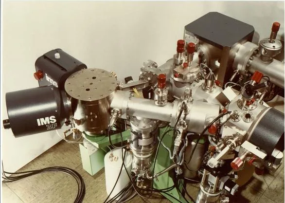
Tỉ số con/mẹ. Khoáng vật mới hình thành có 100% mẹ và 0% con, nên con/mẹ (D/P) = 0. Sau một chu kỳ bán rã: mỗi loại 50%, D/P = 1. Sau hai chu kỳ: 75% con, 25% mẹ, D/P = 3 (Hình 7.20, Bảng 7.5). Sau khoảng 10 chu kỳ, lượng mẹ còn lại quá ít để đo chính xác. Các phép đo hiện đại đạt khoảng ±2 triệu năm trên 2,5 tỉ năm.
| Số chu kỳ bán rã | Mẹ còn lại (%) | Con hiện có (%) | Tỉ số con/mẹ | Tỉ số mẹ/con |
|---|---|---|---|---|
| Bắt đầu tính giờ | 100 | 0 | 0 | vô cùng |
| 1 | 50 | 50 | 1 | 1 |
| 2 | 25 | 75 | 3 | 0,33 |
| 3 | 12,5 | 87,5 | 7 | 0,143 |
| 4 | 6,25 | 93,75 | 15 | 0,0667 |
| 5 | 3,125 | 96,875 | 31 | 0,0325 |
| 10 | 0,098 | 99,9 | 1023 | 0,00098 |
Thử nghiệm: máy tính chu kỳ bán rã
Hai đồng hồ trong một mẫu. Phương pháp urani–chì chạy đồng thời 238U và 235U, nên mỗi mẫu tự kiểm tra chéo. Nhiều mẫu chứa nhiều cặp mẹ–con, và việc kiểm tra chéo các đồng hồ này xác nhận rằng định tuổi bằng đồng vị phóng xạ có độ tin cậy cao.
Định tuổi bằng carbon-14
(định tuổi carbon phóng xạ) dùng cho các mẫu khảo cổ chứa chất hữu cơ như gỗ, xương, dựa trên 14C không bền và 12C bền (Hình 7.21).
Vì giới hạn hữu ích là khoảng 10 chu kỳ bán rã, carbon-14 dùng được tới khoảng 57.300 năm. Thời đầu người ta giả định lượng 14C trong khí quyển gần như không đổi trong 50.000 năm qua, nhưng thực tế nó đã thay đổi. Việc so sánh tuổi carbon với vòng sinh trưởng của cây () và các sự kiện đã biết đã giúp hiệu chỉnh phương pháp, và carbon-14 đã hiệu chỉnh là đáng tin cậy với mẫu khảo cổ và các sự kiện địa chất rất gần đây. Mẫu được đo bằng phổ khối gia tốc (Hình 7.22).
7.2.3 Tuổi của Trái Đất
- Hutton và những người khác mở ra ý tưởng về một Trái Đất rất cổ (Học phần 1).
- Lord Kelvin (William Thomson) giả định Trái Đất ban đầu là một quả cầu nóng chảy rồi nguội đi: khoảng 98 triệu năm, nêu thành khoảng 20–400 triệu năm.
- Tính phóng xạ được phát hiện, cho cách đo tuổi cổ chính xác hơn.
- Clair Patterson, khi còn là nghiên cứu sinh tại Đại học Chicago, định tuổi thiên thạch (tàn dư từ lúc Hệ Mặt Trời hình thành) bằng phương pháp urani–chì với khối phổ kế: 4,55 tỉ năm ± khoảng 70 triệu (±1,5%).
- Ước tính hiện tại: 4,54 tỉ năm ± 50 triệu (±1,1%), hầu như không đổi sau hơn 60 năm.
Con số của Kelvin sai lệch nhiều vì nhiệt truyền không đều bên trong Trái Đất, và ông không tính đến việc manti có thể chảy dẻo và truyền nhiệt bằng . Ước tính của ông được xem là hợp lý, dù bị tranh luận.
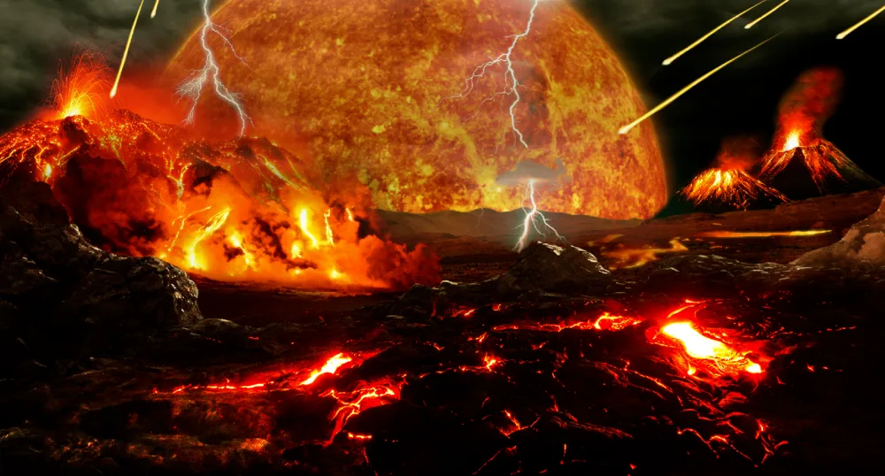
7.2.4 Định tuổi các sự kiện địa chất
Đồng vị của các nguyên tố phổ biến trong khoáng vật là tốt nhất. Phương pháp urani–chì, với hai đồng hồ, chủ yếu dùng trên zircon (ZrSiO4), nơi urani có thể thay thế zirconi trong mạng tinh thể. Zircon bền với phong hóa. Trong các đợt biến chất, zircon có thể mọc thêm các lớp mới, mỗi lớp ghi lại tuổi của một sự kiện.

Zircon cổ cho ta biết gì
- 4,4 tỉ năm: zircon ở Tây Úc, hình thành khi vỏ Trái Đất lần đầu tách khỏi manti, nằm trong đá chủ trầm tích biến chất trẻ hơn nhiều. Chúng cho thấy đá lục địa đã nhô trên mực nước biển và Trái Đất đủ nguội để có nước lỏng, nên phong hóa và bào mòn đã có thể diễn ra.
- 4,1 tỉ năm: các nhà nghiên cứu UCLA tìm thấy carbon trong zircon có thể có nguồn gốc sinh học, gợi ý sự sống xuất hiện sớm hơn ta từng nghĩ.
Định tuổi các loạt trầm tích. Đá magma cho tuổi kết tinh; biến chất có xu hướng đặt lại và làm nhòe tuổi; trầm tích vụn trộn lẫn nhiều nguồn. Vì vậy nhà địa chất định tuổi trầm tích nhờ các đá magma quanh chúng (Hình 7.25). Kali, phổ biến trong evaporit, cũng đã được dùng để định tuổi kali–argon.

7.2.5 Các kỹ thuật định tuổi tuyệt đối khác
(nhiệt phát quang) đo thời gian kể từ khi các khoáng vật silicat trong trầm tích hạt thô được phơi ánh sáng mặt trời hoặc nhiệt lần cuối ở bề mặt. Bức xạ nền từ phân rã đặt electron vào các “bẫy” trong mạng tinh thể của khoáng vật như thạch anh. Ánh sáng mặt trời (tia UV) và nhiệt ở bề mặt làm trống các bẫy; khi bị chôn chỉ vài inch, hạt lại bắt đầu bẫy electron. Trong phòng thí nghiệm, mẫu lấy ở độ sâu vài feet được kích thích bằng ánh sáng, giải phóng electron dưới dạng photon: sự phát quang. Càng nhiều ánh sáng, thời gian chôn vùi càng dài. Phương pháp dùng cho trầm tích dưới 1 triệu năm tuổi. Ở Utah, nó định tuổi các lớp hạt thô bị chôn gần các đứt gãy như đứt gãy Wasatch, nơi thiếu đất hữu cơ bị chôn để dùng carbon-14, nhằm tìm của các trận động đất lớn.

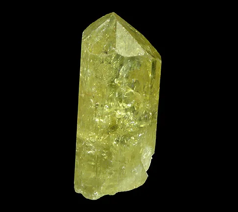
Định tuổi bằng vết phân hạch
: phân rã urani trong các hạt khoáng vật như apatit để lại các vệt hư hại trong mạng tinh thể, đủ lớn để đếm dưới kính hiển vi quang học. Càng nhiều vết, hạt càng cổ. Khoảng áp dụng: khoảng 100.000 đến 2 tỉ năm (1 × 105 đến 2 × 109). Phương pháp cũng là đồng hồ thứ hai để xác nhận tuổi từ phương pháp khác. (Các vết do 238U phân hạch tạo ra; xem ghi chú kiểm chứng.)
| Phương pháp | Đại lượng đo | Khoảng áp dụng | Vật liệu điển hình |
|---|---|---|---|
| Urani–chì | Tỉ số 238U→206Pb và 235U→207Pb (hai đồng hồ) | Tới vật chất cổ nhất của Trái Đất và thiên thạch | Zircon |
| Kali–argon | Tỉ số 40K→40Ar | Các sự kiện địa chất (chu kỳ bán rã 1,25 tỉ năm) | Đá magma, evaporit |
| Carbon-14 | Lượng 14C còn lại so với 12C | Tới khoảng 57.300 năm | Gỗ, xương, chất hữu cơ |
| Phát quang | Ánh sáng do electron bị bẫy phát ra | Dưới 1 triệu năm | Trầm tích hạt thô giàu thạch anh bị chôn vùi |
| Vết phân hạch | Số vết hư hại | Khoảng 100.000 đến 2 tỉ năm | Apatit và các hạt chứa urani khác |
Kiểm tra: Câu hỏi Mục 7.2 trong giáo trình ↗
7.3Hóa thạch và tiến hóa
là mọi bằng chứng về sự sống trong quá khứ được bảo tồn trong đá: phần cơ thể thật (hiếm), dấu in của phần mềm, khuôn và bản đúc (phổ biến hơn), phần cơ thể bị khoáng vật thay thế (phổ biến), hoặc dấu vết hoạt động như dấu chân và hang đào. Phần lớn sự sống ngày nay thân mềm hoặc đơn bào, khó được bảo tồn trừ trong điều kiện đặc biệt. Đại dương là nơi bảo tồn tốt nhất, nhưng các quá trình ở biển hòa tan phần cứng và động vật ăn xác làm mất di tích; trên đất liền cơ hội còn thấp hơn. Vì vậy hồ sơ hóa thạch không đầy đủ, nhưng vẫn được dùng để đối sánh (kế tục hóa thạch) và xếp các hệ tầng vào thang tuổi địa chất.

7.3.1 Các kiểu bảo tồn
Phần cứng như vỏ trai hay xương khủng long là loại hóa thạch phổ biến nhất, và vật chất ban đầu hầu như luôn bị khoáng vật mới thay thế nhưng vẫn giữ hình dạng.
| Kiểu | Cách hình thành | Ví dụ |
|---|---|---|
| Hiếm. Vật chất ban đầu hoặc phần cứng còn nguyên; mô mềm thường bị vi khuẩn phân hủy. | Côn trùng trong hổ phách; xà cừ trong vỏ; da và lông voi ma mút trong trầm tích sau băng hà ở Bắc Cực; mô mềm khủng long bị ướp xác tự nhiên hiếm gặp, có protein và có thể có mảnh DNA | |
| Sau khi bị chôn, các nguyên tố trong nước dưới đất lấp đầy mọi khoảng trống trong cơ thể, kể cả tế bào; xương và răng dễ được bảo tồn nhất. | Gỗ hóa đá (giữ cấu trúc cellulose) | |
| và | Sinh vật bị hòa tan, để lại một hốc (khuôn ngoài); trầm tích hoặc khoáng vật lấp hốc tạo bản đúc. Bản đúc trong của trai, ốc, thậm chí hộp sọ có thể cho thấy cấu trúc mềm. Nếu hóa học phù hợp và bị chôn nhanh, các kết hạch khoáng vật hình thành quanh phần mềm và giữ chi tiết ba chiều: . | Khuôn ngoài của một con trai |
| Mô bị nén, chất bốc bị đẩy ra, chỉ còn lại hình bóng bằng carbon. | Hóa thạch lá cây và dương xỉ | |
| Bằng chứng gián tiếp do sinh vật để lại khi sống; được nghiên cứu trong . | Dấu chân khủng long (kích thước, dáng đi, tốc độ, tập tính), hang đào, , |
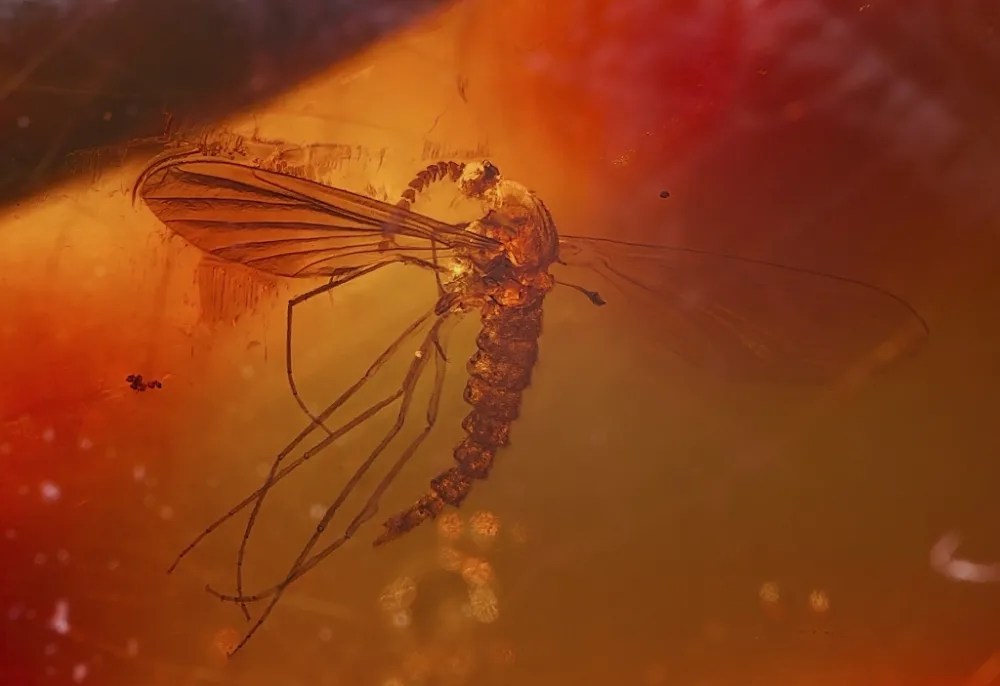
Bảo tồn nguyên trạngmuỗi trong hổ phách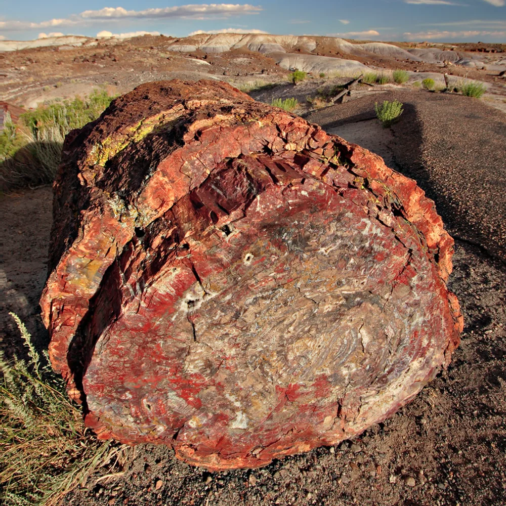
Khoáng hóa thấmgỗ hóa đá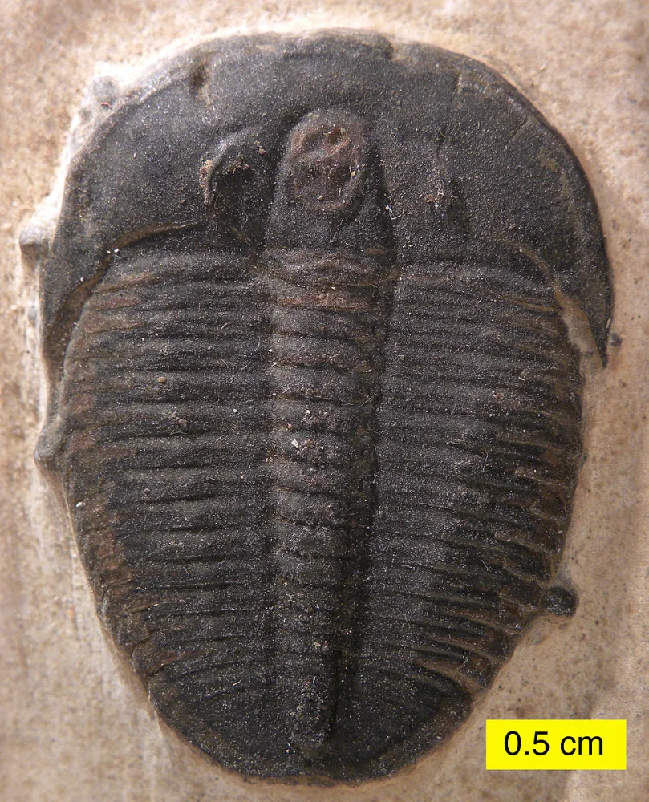
Khoáng hóa thấmbọ ba thùy, bộ xương ngoài cứng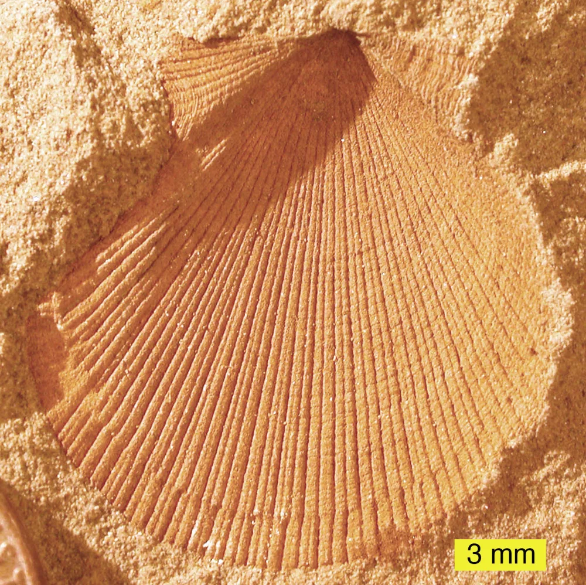
Khuônkhuôn ngoài của một con trai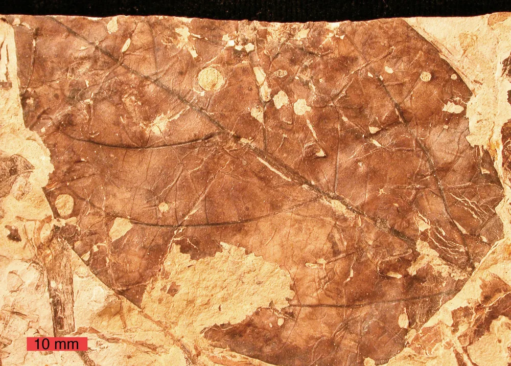
Carbon hóalá bị carbon hóa Hóa thạch dấu vếtdấu chân Chirotherium
Hóa thạch dấu vếtdấu chân Chirotherium

7.3.2 Tiến hóa
Tiến hóa tạo nên sự đa dạng hóa thạch giúp việc đối sánh khả thi. Charles Darwin (1809–1882) nhận ra rằng các dạng sống tiến hóa thành dạng mới và đề xuất là cơ chế, tác động lên sinh vật có môi trường thách thức sự sống còn của chúng. là đơn vị cơ bản: một quần thể có chung đặc điểm và có thể sinh con hữu thụ.
- Biến dị. Các cá thể trong quần thể khác nhau, do sự tổ hợp gen trong sinh sản hữu tính và do đột biến tự nhiên.
- Thử thách. Mỗi cá thể phải sống sót trước môi trường đủ lâu để sinh sản.
- Lợi thế. Cá thể có đặc điểm có lợi dễ sinh sản hơn và truyền đặc điểm đó lại.
- Kết cục. Nếu quá ít cá thể sống sót và quần thể không sinh đủ con có sức sống, loài bị . Nếu các đặc điểm có lợi tích lũy, các quần thể có thể bị cách ly di truyền (đôi khi bởi rào cản địa lý như một hòn đảo) và tiến hóa thành các loài riêng (hình thành loài).
Một loài trong hồ sơ hóa thạch tồn tại trung bình khoảng một triệu năm. Có loài hầu như không đổi hình thái theo thời gian; loài khác biến đổi từ từ hoặc theo từng bước nhảy, với các dạng trung gian nhìn thấy được. Darwin trình bày học thuyết trong Nguồn gốc các loài (Học phần 1). Các công cụ hiện đại không ngừng bổ sung cách nghiên cứu tiến hóa và hình thành loài; tiến hóa là một vững chắc, đã vượt xa giai đoạn .
Kiểm tra: Câu hỏi Mục 7.3 trong giáo trình ↗
7.4Đối sánh địa tầng
(correlation) xác định những tầng trầm tích nào ở các nơi tách biệt có cùng tuổi. Có thể dùng đảo cực từ (Học phần 2), loại đá, trình tự đá đặc trưng, hoặc hóa thạch chỉ đạo. Có bốn kiểu chính (Bảng 7.8).

| Kiểu | Ghép tầng đá dựa vào | Ví dụ trong chương |
|---|---|---|
| Vị trí trong trình tự (quan hệ địa tầng) | Wingate (Canyonlands) = Moenave (Zion) | |
| Thạch học: thành phần và tính chất vật lý | Cát kết Navajo ở Zion và Canyonlands | |
| Cùng tuổi, dù khác thạch học | Ám tiêu Capitan kỷ Permi, Texas | |
| Hóa thạch chỉ đạo | Trùng lỗ; răng nón |
7.4.1 Đối sánh địa tầng theo vị trí
Nhà địa chất lập bản đồ và xây dựng cột địa tầng, bản mô tả chi tiết các tầng đá từ dưới lên. Ở Vườn quốc gia Canyonlands, cát kết Navajo nằm trên hệ tầng Kayenta, hệ tầng này nằm trên hệ tầng Wingate tạo vách. Ở Vườn quốc gia Zion, Navajo nằm trên Kayenta, Kayenta nằm trên hệ tầng Moenave tạo vách. Theo vị trí, Wingate và Moenave tương ứng nhau; chúng mang tên riêng vì thành phần và kiểu lộ ra hơi khác nhau (Hình 7.33). Tầng đá của cao nguyên Colorado có thể đối sánh theo cách này trên hàng nghìn dặm vuông.

7.4.2 Đối sánh thạch địa tầng
Đối sánh thạch địa tầng ghép tầng đá theo thạch học (tiếng Hy Lạp lithos: đá): thành phần và tính chất vật lý. Có thể ghép cả hệ tầng qua khoảng cách xa, hoặc lần theo các lớp nhỏ trong hệ tầng để biết phạm vi và môi trường lắng đọng của chúng. Cát kết Navajo tạo nên vách đá Zion chính là đá ở Canyonlands, cách hàng trăm dặm, và ở các vườn quốc gia Capitol Reef và Arches. Cùng hệ tầng ấy được gọi là cát kết Aztec ở Nevada và cát kết Nugget gần Salt Lake City, nơi nó đủ khác biệt để mang tên riêng.
- Vườn quốc gia Zionnhìn từ Angels Landing
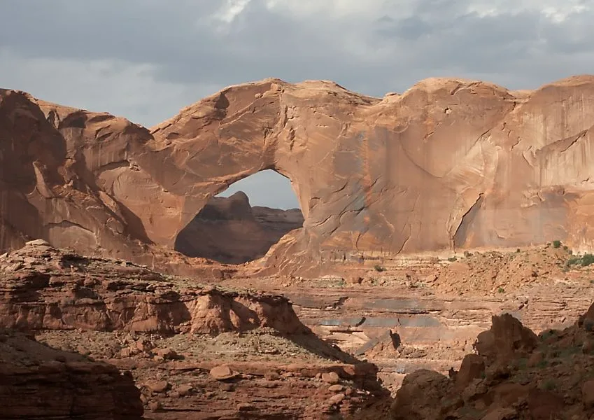
Vòm Stevens, Coyote Gulchcách Zion khoảng 125 dặm
7.4.3 Đối sánh thời địa tầng
Đối sánh thời địa tầng ghép các đá cùng tuổi, kể cả khi thạch học khác nhau. Môi trường lắng đọng thay đổi theo không gian, nên cùng một lúc có thể hình thành các đá trầm tích khác nhau: ở môi trường biển, từ bãi biển đến vùng gần bờ, đầm phá nông, ám tiêu, sườn dốc và biển sâu, mỗi nơi một hệ tầng riêng. Ở ám tiêu Capitan kỷ Permi thuộc dãy núi Guadalupe, Tây Texas, một đường thời gian màu đỏ đánh dấu một thời điểm khi đầm phá/sau ám tiêu, ám tiêu và bột kết biển sâu cùng đang hình thành (Hình 7.36). Đây là quan hệ giữa đơn vị thời gian và đơn vị đá: một đơn vị thạch địa tầng là một loại đá, có thể khác tuổi ở các nơi khác nhau, còn một đơn vị thời địa tầng là toàn bộ đá hình thành trong một khoảng thời gian.

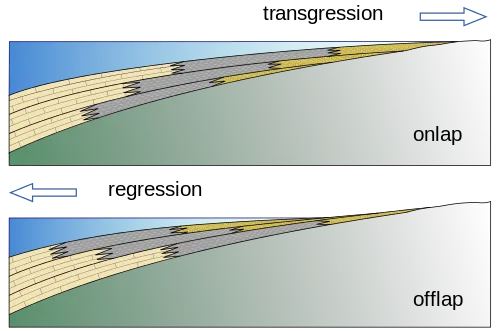
7.4.4 Đối sánh sinh địa tầng
Đối sánh sinh địa tầng dùng , những tổ hợp sinh vật chỉ có mặt trong các khoảng thời gian xác định, để định tuổi tầng đá. Hóa thạch giúp xếp một hệ tầng vào một khoảng tuổi, như kỷ Jura (201–145 triệu năm trước); phần lớn thang tuổi địa chất gắn với các tổ hợp hóa thạch. Hóa thạch chỉ đạo tốt nhất là của sinh vật phân bố rộng về địa lý nhưng chỉ sống trong một khoảng thời gian ngắn (Hình 7.38).

Vi hóa thạch, phần lớn từ sinh vật đơn bào, thuộc loại tốt nhất: phân bố rộng, và loài có vỏ cứng thì dễ bảo tồn. (foraminifera), sinh vật đơn bào vỏ vôi, đặc biệt hữu ích cho kỷ Phấn Trắng và đại Tân sinh. (conodont) là phần cứng dạng răng bằng phosphat của một loài vật giống lươn không có phần cứng nào khác; chúng dùng để đối sánh tầng đá từ kỷ Cambri đến kỷ Tam Điệp. Loài vật này sống ở biển nông khắp thế giới, tiến hóa nhanh, và các “răng” rải rác của chúng dễ tách khỏi đá vôi trong phòng thí nghiệm.
 Trùng lỗQuinqueloculina seminula
Trùng lỗQuinqueloculina seminula Răng nóntừ Alaska
Răng nóntừ Alaska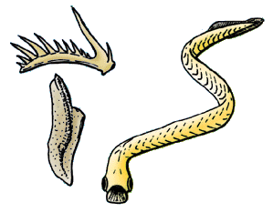
Con vật mang răng nóntranh phục dựng
Trong thập niên 1960, một nghiên cứu then chốt đã gắn các đới răng nón kỷ Tam Điệp với cúc đá (họ hàng đã tuyệt chủng của ốc anh vũ), vốn là chuẩn duy nhất để đối sánh kỷ Tam Điệp trước đó. Việc đối chiếu vi và đại hóa thạch chỉ đạo làm cả hai đáng tin cậy hơn, và răng nón sau đó được dùng để đối sánh tầng đá kỷ Tam Điệp ở phạm vi quốc tế: châu Âu, miền tây Bắc Mỹ và các đảo Bắc Cực của Canada.
7.4.5 Thang tuổi địa chất
Nhà địa chất chia thời gian thành các đơn vị lồng nhau: (lớn nhất), , , và kỳ (Bảng 7.9, Hình 7.40). Cách phân chia giống nhau ở mọi nơi trên Trái Đất, nhưng đá của một khoảng thời gian có thể vắng mặt ở một nơi nào đó: thời gian liên tục không gián đoạn, còn bản ghi đá thì có khoảng trống.
| Đơn vị thời gian | Đá của đơn vị đó gọi là | Hiện nay chúng ta ở |
|---|---|---|
| Liên đại (lớn nhất) | Liên giới | Liên đại Hiển sinh |
| Đại | Giới | Đại Tân sinh |
| Kỷ | Hệ | Kỷ Đệ Tứ |
| Thế | Thống | Thế Holocen |
| Kỳ (nhỏ nhất) | Bậc* | Kỳ Meghalaya* |
*Không có trong chương; theo bảng của Ủy ban Địa tầng Quốc tế (ICS, stratigraphy.org/chart).
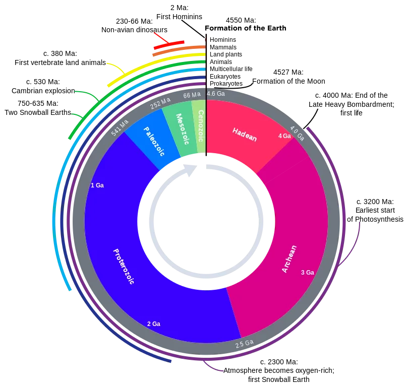
được xây dựng vào thế kỷ 19 từ các nguyên lý địa tầng học; thứ tự các đơn vị đã được biết trước khi có thể gán con số. Đối sánh sinh địa tầng dùng hóa thạch để đặt tên đại và kỷ cho đá trầm tích trên toàn thế giới. Ngày nay, một số nhà địa chất cho rằng con người tác động mạnh đến các quá trình tự nhiên đến mức nên bổ sung một đơn vị mới, .
Kiểm tra: Câu hỏi Mục 7.4 trong giáo trình ↗
Tóm tắt
Các sự kiện trong lịch sử Trái Đất có thể được sắp xếp theo thứ tự nhờ các nguyên lý định tuổi tương đối, và thang tuổi địa chất đã được xây dựng hoàn chỉnh vào thế kỷ 19 theo cách này, không cần tuổi bằng số. Việc phát hiện tính phóng xạ cuối những năm 1800 cho phép định tuổi tuyệt đối từ sự phân rã của các đồng vị không bền; diễn giải đúng phụ thuộc vào loại đá và các giả định chính xác về lượng đồng vị ban đầu. Kết hợp định tuổi tương đối và tuyệt đối đã cho biết lịch sử các sự kiện địa chất, tuổi Trái Đất và thang tuổi địa chất với độ chính xác đáng kể. Đối sánh cho thấy môi trường lắng đọng thay đổi theo không gian ra sao. Thời gian địa chất vô cùng dài, đủ để sự sống tiến hóa, và một số dạng sống được bảo tồn thành hóa thạch dùng cho đối sánh sinh địa tầng. Thang thời gian liên tục, dù bản ghi đá có chỗ đứt quãng.
Tóm tắt nhanh
- Nguyên lý tương đối: chồng chất, nằm ngang ban đầu, liên tục theo phương ngang, cắt xuyên, thể bao, kế tục hóa thạch.
- Bất chỉnh hợp: trên đá kết tinh (tầng đá trên đá magma/biến chất), song song (giữa các tầng song song), góc (tầng ngang trên tầng nghiêng).
- Phân rã: alpha (Z −2, A −4), beta (Z +1), bắt giữ electron (Z −1). Chu kỳ bán rã: thời gian để một nửa đồng vị mẹ phân rã. Con/mẹ = 1, 3, 7, 15 … sau 1, 2, 3, 4 chu kỳ.
- Đồng hồ: U–Pb (zircon, hai đồng hồ), K–Ar, Rb–Sr, 14C (tới ~57.300 năm), phát quang (<1 triệu năm), vết phân hạch (105–2 × 109 năm).
- Trái Đất: 4,54 ± 0,05 tỉ năm (Patterson: 4,55, từ thiên thạch). Zircon cổ nhất 4,4 tỉ năm.
- Bảo tồn: nguyên trạng, khoáng hóa thấm, khuôn và bản đúc, carbon hóa, hóa thạch dấu vết.
- Đối sánh: địa tầng, thạch địa tầng, thời địa tầng, sinh địa tầng (hóa thạch chỉ đạo: phân bố rộng, sống ngắn).
- Đơn vị thời gian: liên đại › đại › kỷ › thế › kỳ; đơn vị đá: liên giới › giới › hệ › thống (› bậc).
Tài liệu tham khảo
Ghi chú kiểm chứng
Mọi nội dung trong tài liệu này đã được đối chiếu với chương sách. Chỗ nào chương sách khác với tài liệu hiện hành hoặc tự mâu thuẫn, tài liệu ghi lại ở đây để bạn biết sách viết gì.
| Chủ đề | Chương sách viết | Ghi chú |
|---|---|---|
| Số nguyên lý | “Mô tả năm nguyên lý của địa tầng học” | Mục 7.1.1 liệt kê sáu nguyên lý (chồng chất, nằm ngang ban đầu, liên tục theo phương ngang, cắt xuyên, thể bao, kế tục hóa thạch). Tài liệu trình bày đủ sáu. |
| Số mục | “7.1.3 Unconformities” và “7.1.3 Applying Relative Dating Principles” | Hai mục trùng số; tài liệu đánh số mục thứ hai là 7.1.4. |
| Độ chính xác định tuổi | “cộng trừ hai triệu năm trên 2,5 tỉ năm (tức ±0,055%)” | 2 triệu ÷ 2,5 tỉ = 0,08%. Tài liệu chỉ ghi các giá trị, không ghi tỉ lệ phần trăm. |
| Tỉ lệ mẹ/con sau 5 chu kỳ bán rã | 0,0325 | 3,125 ÷ 96,875 = 0,0323. Bảng giữ giá trị của chương sách. |
| Kali-40 | Phân rã thành argon-40 bằng bắt giữ electron | Phần lớn 40K (khoảng 89%) phân rã thành calci-40 bằng phân rã beta; khoảng 11% thành 40Ar bằng bắt giữ electron. Chu kỳ bán rã 1,25 tỉ năm tính cho cả hai nhánh (Nuclear Data Sheets). |
| Vết phân hạch | Hình thành khi 238U “phân rã thành sản phẩm con 234Th và giải phóng một hạt alpha” | Vết phân hạch do phân hạch tự phát của 238U, khi hạt nhân tách thành hai mảnh lớn bay ra; hư hại do giật lùi của phân rã alpha quá nhỏ để thấy dưới kính hiển vi quang học (Gallagher, Brown & Johnson, 1998, Annual Review of Earth and Planetary Sciences 26). Tài liệu viết “urani phân rã … phân hạch của 238U”. |
| Đá cổ nhất | Các zircon 4,4 tỉ năm “được xác định là đá cổ nhất đã biết” | Đó là hạt khoáng vật cổ nhất đã biết, nằm trong đá chủ trẻ hơn nhiều (như chương sách viết tiếp theo). Tài liệu gọi chúng là vật chất cổ nhất đã biết của Trái Đất. |
| Tuổi kỷ Jura | “Kỷ Jura (199 đến 145 triệu năm trước)” | Thang tuổi của chính chương sách và bảng ICS cho kỷ Jura bắt đầu ở 201 Ma; tài liệu dùng 201–145. Bảng ICS hiện hành cũng dời đáy kỷ Phấn Trắng về 143,1 ± 0,6 Ma; tài liệu giữ 145 của chương sách. |
| Bắt đầu liên đại Hiển sinh | Bảng thuật ngữ: 541 triệu năm trước; hình thang tuổi: 539 Ma | Bảng ICS ghi 538,8 Ma; tài liệu dùng 539 theo hình. |
| Guadalupe | “Guadalupe National Monument” | Ám tiêu Capitan nằm trong Vườn quốc gia Guadalupe Mountains, Texas. |
| Phân rã beta | “một neutron … tách thành một electron và một proton” | Còn có một phản neutrino được giải phóng; chương sách bỏ qua và tài liệu cũng vậy. |
| Vị trí hình | Một đồ thị CO2 trong 400.000 năm qua nằm ở mục carbon-14 | Đồ thị nói về khí hậu, không về định tuổi, và văn bản không nhắc đến nó, nên tài liệu bỏ qua. Hình đường cong chuông của sách (“Variation within a population”) thể hiện “trường hợp hiếm” theo thống kê chứ không phải một đặc điểm sinh học, nên cũng được bỏ qua. |
Thuật ngữ tiếng Việt. Các thuật ngữ sau đã được đối chiếu với tên bài trên vi.wikipedia (qua liên kết ngôn ngữ từ en.wikipedia): địa tầng học, bất chỉnh hợp, bất chỉnh hợp góc, phân rã alpha, phân rã beta, bắt giữ electron, chu kỳ bán rã, chuỗi phân rã, định tuổi bằng carbon-14, định tuổi bằng đồng vị phóng xạ, định tuổi bằng phát quang, phương pháp khối phổ, sinh địa tầng, thạch địa tầng, trùng lỗ, chọn lọc tự nhiên, thang tuổi địa chất, móng, hệ/thống/bậc, niên đại học thụ mộc, đồng nhất luận, biển tiến, đồng vị, apatit, zircon, hổ phách, bọ ba thùy, cùng tên các đại, kỷ và thế. Những thuật ngữ chưa tìm thấy trong nguồn chính thức được ghi rõ trong bảng thuật ngữ: tên các nguyên lý (chồng chất, nằm ngang ban đầu, liên tục theo phương ngang, cắt xuyên, kế tục hóa thạch), bất chỉnh hợp song song, bất chỉnh hợp trên đá kết tinh, biển thoái, vách đứt gãy, thời địa tầng, hóa thạch chỉ đạo, các kiểu bảo tồn hóa thạch, hóa thạch dấu vết, cổ dấu vết học, phân hóa thạch, sỏi dạ dày, răng nón, định tuổi bằng vết phân hạch, chu kỳ lặp lại, hệ kín, liên giới, giới và Thế Nhân sinh.
Nguồn & trích dẫn
Nội dung tóm tắt từ An Introduction to Geology, Chương 7, © 2017 Chris Johnson, Matthew D. Affolter, Paul Inkenbrandt và Cam Mosher, giấy phép CC BY-NC-SA 4.0. Nguồn ảnh ghi ở chú thích từng hình; các ảnh chương sách ghi “All Rights Reserved” (chân dung Steno, granit và gneis) không được dùng.
- Từ chương sách, theo giấy phép ghi trong phần ghi nguồn hình ảnh: Grand Canyon (ảnh bìa, tháng 3/2013, bất chỉnh hợp trên đá kết tinh, Lipan Point), chồng chất ở Isfjorden, Grandview Point, kế tục hóa thạch, địa tầng Grand Canyon, Redwall/Temple Butte/Muav, ba hình vẽ bất chỉnh hợp, sơ đồ khối, Nuvvuagittuq, đồng vị hydro, mô phỏng chu kỳ bán rã, phân rã alpha, chuỗi phân rã U-238, bắt giữ electron, khối phổ kế, khối phổ kế gia tốc, Trái Đất thời Hỏa thành, zircon, các lớp tro Yellowstone, nhiệt phát quang, apatit, Archaeopteryx, bọ ba thùy, hổ phách, gỗ hóa đá, khuôn ngoài, lá carbon hóa, dấu chân Chirotherium, phân hóa thạch, bản đồ hóa thạch Gondwana, Grand Staircase, sa thạch Navajo (Zion, Stevens Arch), ám tiêu Capitan, phủ chờm/phủ lùi, hóa thạch chỉ đạo, trùng lỗ, răng nón, động vật răng nón, đồng hồ địa chất.
- Vẽ lại cho tài liệu này từ hình của chương sách: đồ thị chu kỳ bán rã (theo Krishnavedala, phạm vi công cộng) và thang tuổi địa chất (theo B. C. Madsen cho SLCC).
- Vẽ riêng cho tài liệu này: các nguyên lý định tuổi tương đối, các bước định tuổi carbon-14, định tuổi tầng đá bằng đá magma, đối sánh Canyonlands–Zion.
- Tài liệu ngoài dùng để kiểm chứng: bảng của Ủy ban Địa tầng Quốc tế (stratigraphy.org/chart); Gallagher, Brown & Johnson (1998) về vết phân hạch; Nuclear Data Sheets về các nhánh phân rã của 40K; vi.wikipedia cho thuật ngữ tiếng Việt.